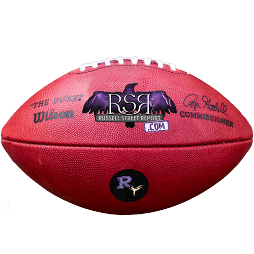
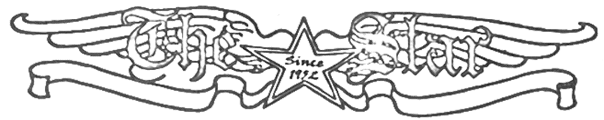
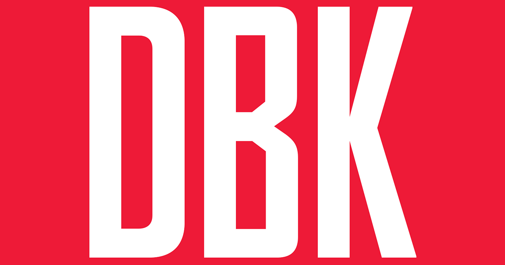

Beat Writer
August 2022 – Present
At WMUC Sports I write game summaries for every basketball and football game. To do so, I attend every home game and watch every away game, as well as attend the post-game press conferences either in-person or over Zoom. I also write feature articles that discuss the overall state of the teams or any noticeable trends in the teams’ gameplay.
Writer

June 2022 – Present
At Russell St. Report, I put together opinion articles regarding the state of the Baltimore Ravens, as well as informational pieces that update readers on who the team added or dropped. On a week-to-week basis, I would provide predictions ahead of each Ravens game that would be compiled into a bigger article with other writers on the staff.
Reporter
Star Printing Company

May 2023 – August 2023
Writing for The Star newspaper of Delta, PA, I produced at least four articles each week that covered local news such as crimes, town events and accidents. During this internship, I attended monthly town hall meetings to gather information and built relationships with local public information officers.
“Terps Watch” Writer

December 2021 – March 2023
As a member of The Diamondback’s Terps Watch beat, I crafted articles that followed former Maryland athletes in their professional sports leagues. One example of my work was covering former Terps that played in the NFL on a week-to-week basis, providing outlooks of their performances ahead of each game. I would also create “how-to-watch” articles for readers to learn how to catch Maryland athletic events.